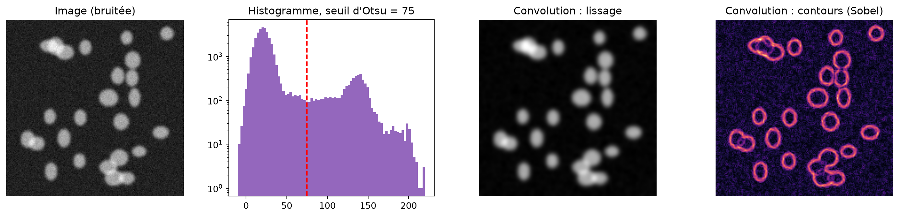

flowchart TB
A["🔬 Image de microscopie"] --> B["Pré-traitement"]
B --> C["<b>Segmentation</b>"]
C --> D["Mesures morphologiques"]
D --> E["Détection d'anomalies"]
E --> F["📄 Rapport quantitatif"]
Séance 4 : Vision par ordinateur pour l’imagerie cellulaire

Notebook de l’atelier — ouvrez-le dans Colab, activez le GPU T4, puis Fichier → Enregistrer une copie dans Drive. Version téléchargeable : S4_imagerie_cellpose.ipynb
ImportantLancez la première cellule dès votre arrivée
L’installation de Cellpose (1 à 2 min) puis le téléchargement de ses poids pré-entraînés (≈ 1,2 Go, 1 à 2 min sur Colab) se font au premier lancement. Démarrez la section 0 avant de lire l’introduction : le téléchargement se fera pendant ce temps.
1. Le problème biologique
L’imagerie est partout en biologie : numération en hématologie, anatomopathologie, suivi de cultures cellulaires en bioproduction, criblage à haut contenu (high-content screening) où des robots acquièrent des dizaines de milliers d’images par jour pour tester l’effet de molécules sur des cellules. Compter et mesurer à la main est lent, fatigant et subjectif (deux opérateurs ne trouvent pas le même nombre).
L’objectif est de passer d’une image à des mesures :
2. Notions théoriques essentielles
2.1 Une image est une matrice de nombres
Une image numérique en niveaux de gris est un tableau 2D : chaque case (pixel) contient une intensité. En microscopie de fluorescence, l’intensité est proportionnelle à la quantité de fluorophore (ex. DAPI ou Hoechst, qui se fixent à l’ADN et marquent les noyaux).
| Notion | Signification |
|---|---|
| Profondeur | 8 bits → valeurs de 0 à 255 ; 16 bits → 0 à 65 535 (fréquent en microscopie) |
| Canaux | une image par fluorophore (ex. noyaux en bleu, membrane en vert) |
| Taille du pixel | en µm/pixel, donnée par le microscope : indispensable pour convertir les surfaces |
| Histogramme | distribution des intensités : fond sombre (pic) vs objets lumineux |
2.2 Les filtres de convolution
Filtrer une image consiste à faire glisser un petit noyau (kernel, ex. 3 × 3) sur l’image et à calculer en chaque pixel une somme pondérée des voisins :
\[ (I * K)(i, j) = \sum_{m} \sum_{n} I(i + m,\, j + n)\, K(m, n) \]
Un noyau de moyenne lisse le bruit ; un noyau de Sobel détecte les contours. Retenez bien cette opération : c’est la brique de base des réseaux de neurones convolutifs.
Code de la figure
import numpy as np
import matplotlib.pyplot as plt
from scipy import ndimage as ndi
from skimage import filters
rng = np.random.default_rng(3)
img = np.zeros((200, 200))
yy, xx = np.mgrid[:200, :200]
for _ in range(25): # 25 « noyaux » elliptiques
cy, cx = rng.uniform(15, 185, 2)
a, b = rng.uniform(6, 11, 2)
img += 120 * (((yy - cy) / a) ** 2 + ((xx - cx) / b) ** 2 <= 1)
img = ndi.gaussian_filter(np.clip(img, 0, 180), 1.5) + rng.normal(20, 8, img.shape)
seuil = filters.threshold_otsu(img)
fig, axes = plt.subplots(1, 4, figsize=(15, 3.6))
axes[0].imshow(img, cmap="gray"); axes[0].set_title("Image (bruitée)")
axes[1].hist(img.ravel(), bins=80, color="tab:purple"); axes[1].axvline(seuil, c="r", ls="--")
axes[1].set_title(f"Histogramme, seuil d'Otsu = {seuil:.0f}"); axes[1].set_yscale("log")
axes[2].imshow(filters.gaussian(img, sigma=2), cmap="gray"); axes[2].set_title("Convolution : lissage")
axes[3].imshow(filters.sobel(img), cmap="magma"); axes[3].set_title("Convolution : contours (Sobel)")
for ax in [axes[0], axes[2], axes[3]]:
ax.axis("off")
plt.tight_layout()
plt.show()
2.3 La segmentation classique
- Seuillage d’Otsu : choisit automatiquement le seuil \(t\) qui maximise la variance inter-classes entre le fond (proportion \(\omega_0\), moyenne \(\mu_0\)) et les objets (\(\omega_1\), \(\mu_1\)) : \[\sigma_B^2(t) = \omega_0(t)\,\omega_1(t)\,\big[\mu_0(t) - \mu_1(t)\big]^2\]
- Morphologie mathématique : retirer les petits objets (bruit), boucher les trous.
- Étiquetage des composantes connexes : chaque « tache » reçoit un numéro.
- Watershed (ligne de partage des eaux) : on calcule pour chaque pixel sa distance au fond ; les maxima locaux servent de « sources », et l’on « inonde » la carte pour séparer les noyaux qui se touchent.
AttentionLes limites de l’approche classique
Chaque paramètre (lissage, taille minimale, distance entre maxima) est réglé à la main pour une image donnée. Avec un éclairage inégal, des cellules collées ou de formes variées, il n’existe souvent pas de réglage qui fonctionne partout.
2.4 Les réseaux de neurones convolutifs (CNN)
Un CNN empile des couches de convolution dont les noyaux ne sont plus choisis par l’humain mais appris à partir d’exemples annotés. Chaque couche est suivie d’une non-linéarité (ReLU : \(\max(0, x)\)) et parfois d’un sous-échantillonnage (pooling). Les premières couches apprennent des contours, les suivantes des textures, puis des formes de plus en plus abstraites.
flowchart TB
I["Image 512 × 512"] --> C1["Convolution → contours"]
C1 --> P1["Pooling → 256 × 256"]
P1 --> C2["Convolution → textures"]
C2 --> P2["Pooling → 128 × 128"]
P2 --> C3["Convolution → formes"]
C3 --> O["Sortie"]
L’apprentissage ajuste les millions de poids des noyaux par descente de gradient pour minimiser l’erreur entre la prédiction et l’annotation (rétropropagation du gradient).
2.5 Segmentation par deep learning : U-Net et Cellpose
| Tâche | Question | Exemple |
|---|---|---|
| Classification | que contient l’image ? | « globule infecté / sain » |
| Segmentation sémantique | quelle classe pour chaque pixel ? | « noyau / fond » |
| Segmentation d’instances | à quel objet appartient chaque pixel ? | « noyau n°17 » ← notre besoin |
Le U-Net (Ronneberger et al., 2015), conçu pour l’imagerie biomédicale, est un réseau en « U » : un encodeur réduit l’image pour comprendre le contexte, un décodeur la remet à pleine résolution, et des connexions directes (skip connections) transmettent les détails fins.
flowchart TB
subgraph E["Encodeur (contexte)"]
E1["512²"] --> E2["256²"] --> E3["128²"]
end
subgraph D["Décodeur (localisation)"]
D3["128²"] --> D2["256²"] --> D1["512²"]
end
E3 --> B["Goulot<br/>64²"] --> D3
E2 -.->|"skip"| D2
E1 -.->|"skip"| D1
D1 --> S["Carte de sortie<br/>par pixel"]
Cellpose (Stringer et al., 2021) est un réseau de type U-Net entraîné sur des milliers d’images variées. Pour chaque pixel, il prédit : (1) la probabilité d’être dans une cellule et (2) un champ de flux — des vecteurs qui pointent vers le centre de la cellule. En suivant ces flux, les pixels d’une même cellule convergent vers le même point : les cellules qui se touchent sont séparées naturellement. Cellpose-SAM (version 4, 2025) remplace l’encodeur par celui du modèle de vision généraliste Segment Anything pour généraliser encore mieux.
2.6 L’apprentissage par transfert en imagerie
Entraîner un CNN de zéro demande des dizaines de milliers d’images annotées. On réutilise donc un modèle pré-entraîné :
- utilisation directe : Cellpose segmente nos noyaux sans ré-entraînement ;
- extraction de caractéristiques : un CNN entraîné sur ImageNet (1,2 million de photos du quotidien) transforme chaque image en vecteur ; un petit classifieur apprend la tâche (bonus paludisme) ;
- affinage (fine-tuning) : on ré-entraîne les dernières couches sur quelques centaines d’images annotées (Cellpose le permet aussi, avec annotation interactive).
Pourquoi ça marche ? Les premières couches d’un CNN (contours, textures) sont génériques : elles servent aussi bien pour des chats que pour des cellules.
2.7 Évaluer une segmentation
Si l’on dispose d’une annotation de référence (masque \(B\)) et d’une prédiction (masque \(A\)) :
\[ \text{IoU} = \frac{|A \cap B|}{|A \cup B|} \qquad\qquad \text{Dice} = \frac{2\,|A \cap B|}{|A| + |B|} \]
Pour la segmentation d’instances, on apparie chaque cellule prédite à une cellule réelle (IoU > 0,5) et on calcule précision, rappel et précision moyenne (average precision). Sans annotation (notre cas), on se contente d’une inspection visuelle et de la cohérence des comptages.
2.8 De la segmentation aux mesures, et détection d’anomalies
Mesure (regionprops) |
Définition | Intérêt biologique |
|---|---|---|
area |
nombre de pixels × (taille du pixel)² | taille du noyau (ploïdie, cycle cellulaire) |
eccentricity |
0 = cercle, → 1 = allongé | déformation, migration |
solidity |
surface / surface de l’enveloppe convexe | noyaux lobés, fragmentés (apoptose) |
| circularité | \(4\pi A / P^2\) | régularité du contour |
intensity_mean |
intensité moyenne dans l’objet | condensation de l’ADN (mitose, apoptose) |
Pour repérer les cellules atypiques sans étiquette, on utilise l’Isolation Forest : des arbres coupent l’espace des mesures au hasard ; une cellule anormale (très différente des autres) est isolée en très peu de coupes. Le paramètre contamination fixe la proportion attendue d’anomalies.
3. Déroulé de l’atelier
| Temps | Partie du notebook | Activité |
|---|---|---|
| 0:00 – 0:10 | Présentation du problème et de la théorie | 🔎 |
| 0:10 – 0:20 | §0-1 Installation de Cellpose (en premier !), l’image comme matrice | ▶️ Exécuter 🔎 Q1 |
| 0:20 – 0:45 | §2 Segmentation classique : Otsu, watershed, réglage des paramètres | ✍️ Modifier 🔎 Q2 |
| 0:45 – 1:05 | §3 Cellpose : segmentation pré-entraînée, comparaison | ▶️ Exécuter 🔎 Q3 |
| 1:05 – 1:20 | §4 Mesures regionprops, conversion en µm² |
✍️ Modifier |
| 1:20 – 1:35 | §5 Détection d’anomalies (Isolation Forest) | ✍️ Modifier 🔎 Q4 |
| 1:35 – 1:50 | §6 Script automatisé sur 4 champs + export du rapport | ▶️ Exécuter |
| 1:50 – 2:00 | Défi (votre image) ou bonus transfer learning paludisme | ✍️ Modifier |
Code clé à retenir
from cellpose import models
from skimage import measure
modele = models.CellposeModel(gpu=True) # Cellpose-SAM pré-entraîné
masques = modele.eval(image)[0] # 0 = fond, 1..N = une cellule
mesures = measure.regionprops_table(
masques, intensity_image=image,
properties=["label", "area", "eccentricity", "solidity", "intensity_mean"])
print(f"{masques.max()} cellules — surface moyenne : {mesures['area'].mean() * 0.5**2:.1f} µm²")4. Exercices et défis
- Réglage de la méthode classique : faire varier
SIGMA,TAILLE_MIN,DISTANCE_MINet observer sur- et sous-segmentation. - Comparaison classique vs Cellpose : nombre de noyaux, qualité de séparation des noyaux collés, noyaux en mitose.
- Anomalies : faire varier
CONTAMINATION; les anomalies détectées sont-elles des mitoses ? - Défi : analyser votre propre image (ex. BBBC039) avec
analyser_image. - Bonus : transfer learning ResNet-18 + régression logistique pour détecter les globules rouges infectés par Plasmodium.
NoteÉléments de correction
- Méthode classique : avec les réglages par défaut, Otsu trouve 269 objets que le watershed découpe en 312 noyaux.
DISTANCE_MINtrop petit → sur-segmentation (un noyau coupé en plusieurs) ; trop grand → sous-segmentation (noyaux collés fusionnés). Le meilleur réglage varie d’une zone à l’autre de l’image. - Cellpose détecte 333 noyaux (en ~1 s sur GPU). Le signe le plus parlant est la taille des plus gros objets : aire maximale de 307 px pour la méthode classique contre 202 px pour Cellpose, et 8 objets de plus du double de l’aire médiane contre 2 — ces gros objets sont des noyaux accolés fusionnés (sous-segmentation). Attention toutefois :
remove_small_objectsfiltre d’office les petits objets de la méthode classique, ce qui lui donne une fausse apparence de propreté tout en pouvant effacer de vrais petits noyaux. Prix du deep learning : installation, 1,2 Go de poids, GPU conseillé, modèle peu explicable. - Anomalies : avec
CONTAMINATION = 0,05, on obtient ≈ 17 cellules sur 333. Les noyaux mitotiques (ADN condensé) sont petits et très lumineux : ils ressortent en tête de l’Isolation Forest. Les faux positifs typiques sont des noyaux coupés au bord de l’image (d’oùclear_border) ou deux noyaux fusionnés (très grands). - Rapport : sur les 4 champs, le nombre de cellules varie fortement (≈ 40 à 140) alors que la surface moyenne reste stable (≈ 22 à 25 µm²) — c’est le signe d’une segmentation cohérente malgré des densités cellulaires différentes.
- Bonus paludisme : l’extraction de caractéristiques ResNet-18 + régression logistique atteint ≈ 93 % d’exactitude avec seulement 750 images d’apprentissage, sans ré-entraîner le CNN.
5. Livrable
6. Testez-vous
AstuceQ1. Quelle est la différence entre segmentation sémantique et segmentation d’instances ?
La segmentation sémantique attribue une classe à chaque pixel (noyau / fond) ; la segmentation d’instances distingue en plus chaque objet (noyau n°1, n°2…). Pour compter, il faut des instances.
AstuceQ2. Quel est le lien entre un filtre de convolution et un CNN ?
Un CNN est un empilement de convolutions dont les noyaux sont appris par l’entraînement au lieu d’être choisis à la main (comme le lissage gaussien ou le filtre de Sobel).
AstuceQ3. Pourquoi Cellpose fonctionne-t-il sur nos images sans ré-entraînement ?
Parce qu’il a été pré-entraîné sur un jeu très varié d’images de cellules et de noyaux : il a appris des caractéristiques génériques de ce qu’est une cellule. C’est de l’apprentissage par transfert.
AstuceQ4. Pourquoi faut-il connaître la taille du pixel ?
Les mesures sont calculées en pixels. Pour comparer des expériences (autre microscope, autre grossissement) ou interpréter biologiquement une surface, il faut convertir en µm² : surface (µm²) = nombre de pixels × (taille du pixel en µm)².
AstuceQ5. Que mesure l’IoU ?
Le recouvrement entre une segmentation prédite et une segmentation de référence : l’aire de l’intersection divisée par l’aire de l’union (1 = superposition parfaite, 0 = aucun recouvrement).
7. Limites et bonnes pratiques
- Toujours regarder les images : une métrique globale peut cacher des erreurs systématiques.
- Les conditions d’acquisition (exposition, mise au point, marquage) doivent être identiques entre conditions comparées.
- Un modèle pré-entraîné peut échouer sur un type d’image non représenté dans ses données (autre marquage, tissu épais, histologie) : il faut alors l’affiner sur quelques images annotées.
- Pour un usage diagnostique, un outil d’IA doit être validé cliniquement et répondre à la réglementation des dispositifs médicaux.
8. Pour aller plus loin
- Stringer C., Wang T., Michaelos M. & Pachitariu M. (2021). Cellpose: a generalist algorithm for cellular segmentation. Nature Methods, 18, 100-106.
- Pachitariu M., Rariden M. & Stringer C. (2025). Cellpose-SAM: superhuman generalization for cellular segmentation. bioRxiv.
- Ronneberger O., Fischer P. & Brox T. (2015). U-Net: Convolutional networks for biomedical image segmentation. MICCAI.
- Rajaraman S. et al. (2018). Pre-trained convolutional neural networks as feature extractors toward improved malaria parasite detection in thin blood smear images. PeerJ, 6, e4568.
- Ressources : Cellpose · scikit-image — exemples · BBBC